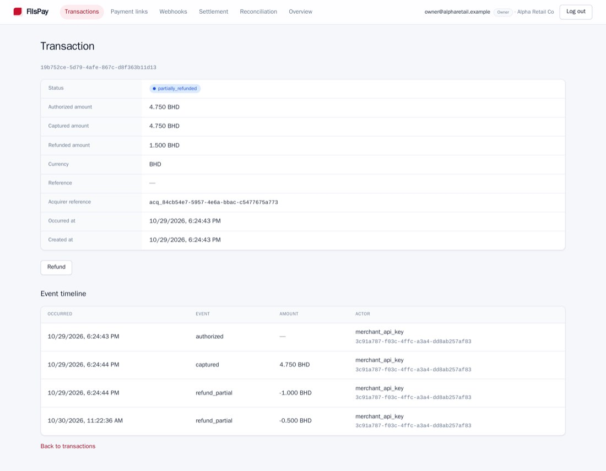
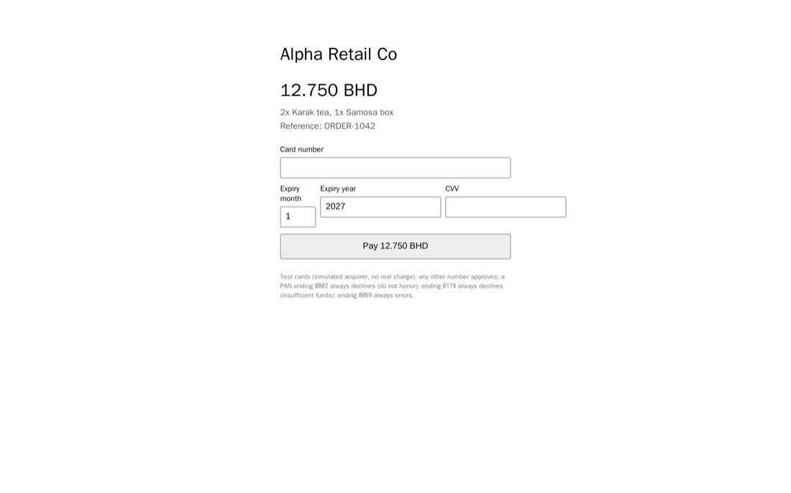
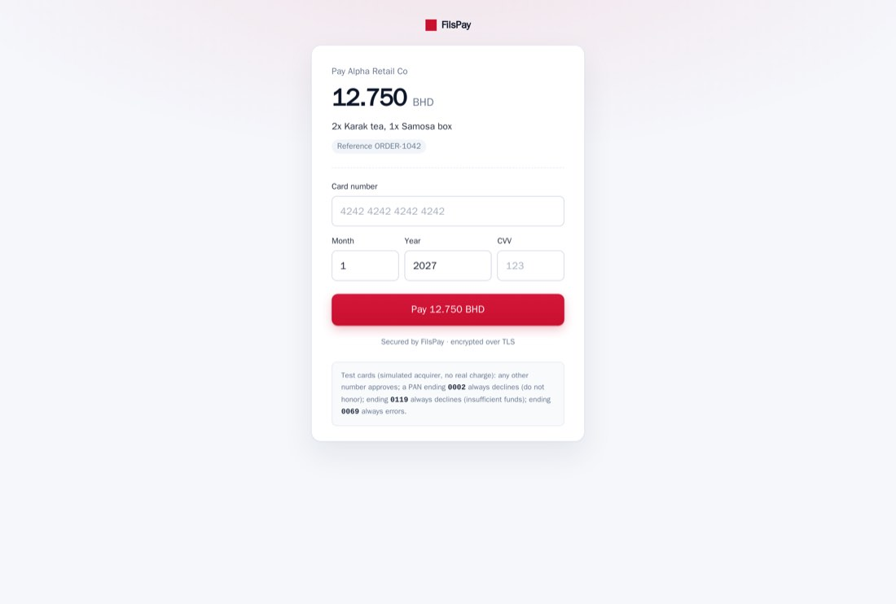

The Handover · FilsPay
| Mouaz Mohamed (Mouaz-mohamed-09) | TO FILL IN |
| Salshamarii | TO FILL IN |
| MJ5-byte | TO FILL IN |
52 bugs fixed · refunds shipped end to end · live on Dilmune Cloud
1 · Root cause
ADRs, comments and CLAUDE.md promised protections the code never had. Several were earlier AI answers nobody checked.
| Promised | Reality | Symptom it explains |
|---|---|---|
| “unique index on outbox events” | no index | duplicate payout notices (08-21) |
| “processed_events dedupes callbacks” | table doesn't exist | duplicate notes (FP-201) |
| “INTEGER is 64-bit” | 32-bit | volume counter overflow |
| “impersonation is read-only” | super_admin = owner | admins writing as merchants |
| “money is cents” (CLAUDE.md) | BD has 3 decimals | CSV 4.75 BD → 0.475 |
2 · Key findings, by impact
3 · Fixes and proof
| Fix | Proof |
|---|---|
| Row lock across the refund | 3 simultaneous refunds → exactly 1 succeeds |
| Cumulative fee reversal | Live: 83 + 167 = 250 = fee charged |
| Integer fils, single rounding | 4,755 fils → “4.75” in the scheme file (was 4.76) |
| Indexes on the ledger trigger | Seq scans 27,430 → 0; p95 3.35 s → 780 ms |
| Same fee formula as settlement | Live reconciliation gap: 0 fils |
| Signed bytes = sent bytes | Webhook verified against a real receiver |
441 TypeScript tests + 7 Go packages pass; the only 5 failures are locked tests that assert reported bugs.
4 · Live demo: full and partial refund

Partial refunds: refunded amount and timeline in the dashboard
| Live 10.000 BD payment | Fils |
|---|---|
| Capture, fee 2.50% | 10,000 / 250 |
| Partial refund 3.333 BD | −3,333 (fee −83) |
| Full remainder 6.667 BD | −6,667 (fee −167) |
| Merchant payable after | 0 |
Settlement report, batch 2026-10-29:
gross 3,750 · fee 84 · net 3,666
5 · Under load
Estimate: ~10 checkouts/s sustained, ~16 ceiling.
| Offered/s | Done/s | p95 | Correct |
|---|---|---|---|
| 10 | 8.7 | 1.76 s | 100% |
| 14 | 12.0 | 2.86 s | 100% |
| 20 | 16.3 | 3.3 s | 100% |
6 · How we used AI
Setup: CLAUDE.md (corrected) + permission rules + /test-all /deploy /smoke /finding commands.
Also caught: CLAUDE.md told the AI money was cents and UTC; earlier AI answers in comments (“INTEGER is 64-bit”) were false.
7 · Decisions and open risks
Appendix
ops/test-all.sh api 374 pass / 5 locked-test fails · reporting 11/11 · web 8/8 · money 40/40 · events 4/4 · Go 7/7 packages R1 ledger scans before seq_scan 27,430 (376M rows) · after 0 (idx_scan 10,068) Crash audit unbalanced groups 0 · paid links w/o capture 0 · stuck keys 0 · double charges 0 Reconciliation 2026-10-29..30: ledger 3,666 = settled 3,666 + pending 0 → gap 0

Checkout before

Checkout after
Full findings: docs/AUDIT.md · capacity: docs/CAPACITY.md · UI: docs/UI_EVIDENCE.md · repo https://github.com/Mouaz-mohamed-09/bhash-handover